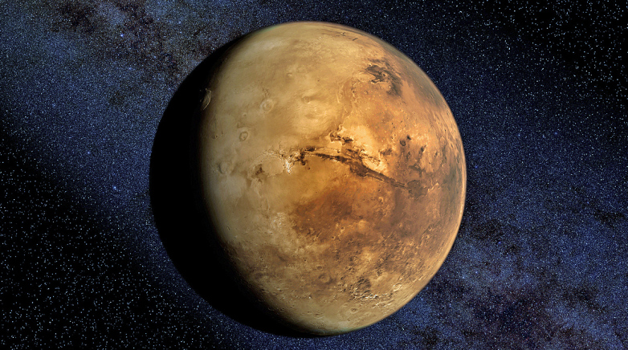

Even though Mars has only 15% of the Earth’s volume and just over 10% of the Earth’s mass, around two thirds of the Earth’s surface is covered in water. Martian surface gravity is only 37% of the Earth’s (meaning you could leap nearly three times higher on Mars).
Olympus Mons, a shield volcano, is 21km high and 600km in diameter. Despite having formed over billions of years, evidence from volcanic lava flows is so recent many scientists believe it could still be active.